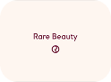

Banner 1 de 2
Itinerario
8 de noviembre
9 de noviembre
Mapa
Ubícanos en el recinto de la feria y elige tu mejor ruta. Aquí verás accesos, puntos de descenso, parqueaderos y transporte público cercano.

Nuestros aliados


Banner 1 de 2
Ubícanos en el recinto de la feria y elige tu mejor ruta. Aquí verás accesos, puntos de descenso, parqueaderos y transporte público cercano.
